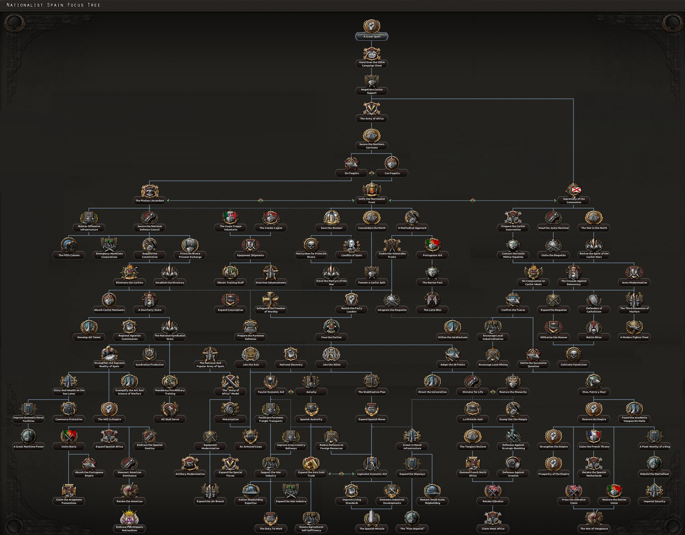
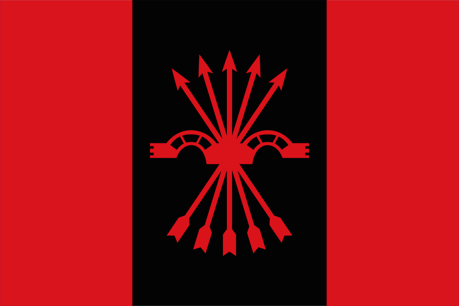
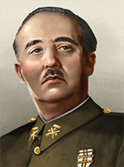
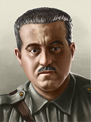
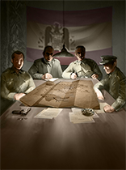
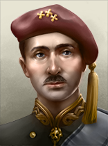
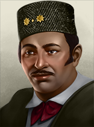
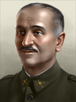

| 西欧 |
|
| 东欧 |
| 西欧 |
|
| 东欧 |
| 苏联 |
|
原页面：Nationalist Spain
Francoist Spain, or Nationalist Spain, is an authoritarian regime that came to power in 1939, historically after beating  共和西班牙 in the Spanish Civil War. They are located in the Iberia region of Southwest Europe.
共和西班牙 in the Spanish Civil War. They are located in the Iberia region of Southwest Europe.
Following the Nationalist victory in the Spanish Civil War against  共和西班牙, Francisco Franco instituted a full dictatorship and suppressed the Republican partisans known as the Maquis.
共和西班牙, Francisco Franco instituted a full dictatorship and suppressed the Republican partisans known as the Maquis.
During that time, World War II broke out, and although Spain was considered an Axis friend, it did not join the war on their side. However, Spain seriously considered joining the Axis Powers to fulfill its imperial ambitions of reclaiming Gibraltar from Britain and annexing French Morocco, Oran, French Cameroon, and Rio de Oro from France. The Spaniards held negotiations with Germany and Italy in the fall of 1940 to discuss their entry into the alliance, culminating in the Meeting at Hendaye. The meeting eventually ended in disaster as Germany reneged on its initial promise to accept Spanish territorial requests for French Morocco, alongside Gibraltar, and to provide material assistance, following Vichy France's victory in the Battle of Dakar and the newfound importance of preserving its empire. An attempt by the Germans to get Spain to attack Gibraltar was also rejected by Franco due to the lack of commitment and worsening economic situation. Nevertheless, Spain would support the Axis in various ways throughout most of the war, all the while maintaining neutrality, most notably through the Blue Division, German U-boats operating in Spanish ports, the Gestapo operating in the country, and the shipment of tungsten to Germany.
After World War II ended, Spain was isolated from the "New World" and struggled for years because of its autarkic economy, which led to a severe economic depression, all while the economy was still trying to recover from the civil war. The country was also isolated from the international community due to it's support for the Axis and was not allowed to join the United Nations. The 1947 Law of Succession made Spain a de jure Kingdom again but defined Franco as the Head of State for life with the power to choose the person to become King of Spain and his successor, consolidating him as a definitive dictator.
Reforms were implemented in the 1950s, and Spain abandoned autarky, delegating authority from the Falangist movement, which had been prone to isolationism, to a new breed of economists, the technocrats of Opus Dei. This led to massive economic growth, second only to Japan, that lasted until Franco's death, known as the "Spanish Miracle".
During the Cold War, Spain aligned with the  美国, joining the United Nations and facing off against the Soviets.
美国, joining the United Nations and facing off against the Soviets.
Franco died in 1975 at the age of 82. He restored the monarchy before his death, which made his successor King Juan Carlos I, who led the Spanish transition to democracy and the restoration of the monarchy.
Nationalist Spain has the *The End of the Spanish Civil War* event. Conditions:
Results:
(This event was before La resistance DLC)

 国民西班牙 gets a unique focus tree with the
国民西班牙 gets a unique focus tree with the  La Résistance expansion. Without the expansion, it utilizes the 通用国策树 instead.
La Résistance expansion. Without the expansion, it utilizes the 通用国策树 instead.
The Nationalist Spanish national focus tree can be divided into 11 sections. 1 pre civil war branch leading into 3 main branches and 2 shared branches. A post civil war sub-branch can be split from each of these Branches:

The Phalanx Ascendant Branch
With the  抵抗运动 DLC enabled, Nationalist Spain also starts with the following national spirits:
抵抗运动 DLC enabled, Nationalist Spain also starts with the following national spirits:
Nationalist Spain begins with the same researched technologies as  共和西班牙 before the Civil War.
共和西班牙 before the Civil War.
Spain lies in Southwestern Europe, with most of its land being on the Iberian peninsula. 1930s Spain also comprises the Balearic Islands and African territory and Islands. Parts of North Africa, namely the Rio de Oro region of modern-day Morocco, Western Sahara, Spanish Africa, Sidi Ifni, Equatorial Guinea and the Canary Islands off the coast of Northwest Africa are owned and controlled by Spain.
Spain is dominated by mountainous and hilly terrain, and mainland Spain is very uneven, with 45 percent of it being covered by the Meseta Plateau. The plateau is rarely flat, with many uneven hills, mountains, and highlands. Spain contains many significant mountain ranges including the Baetic Mountains in the south, the Central and Iberian Chain in the center, and Cantabrian and Pyrenees Mountain ranges in the northwest and northeast respectively. There is also the fertile Andalusian Plain and other basins. There are many large coastal plains, with bays, coves, and sandy beaches. Along the Bay of Biscay there are large coastal, rugged cliffs. The Strait of Gibraltar separates Spain and Europe from Africa, specifically Morocco, with the closest points being only 13 km apart. Finally, mainland Spain contains over 1,500 rivers of which are mostly small. Significant rivers are the Duero, Ebro and Guadalquivir.
Spain shares a long border with its neighbor  葡萄牙 which makes up the rest of the Iberian peninsula. It borders
葡萄牙 which makes up the rest of the Iberian peninsula. It borders  法国 in the north, with the tall Pyrenees mountain range making a natural border between the two nations and in the south through their African colonies. Spain also borders
法国 in the north, with the tall Pyrenees mountain range making a natural border between the two nations and in the south through their African colonies. Spain also borders  英国 in the south with British controlled Gibraltar.
英国 in the south with British controlled Gibraltar.
Spain has multiple important borders to bodies of water, such as the Mediterranean Sea, Strait of Gibraltar, Atlantic Ocean and Bay of Biscay.
Since  国民西班牙 does not exist at the start of the game, it has no states, but after the civil war it has all the states that
国民西班牙 does not exist at the start of the game, it has no states, but after the civil war it has all the states that  共和西班牙 had at the start of the game.
共和西班牙 had at the start of the game.
 军事委员会
军事委员会
| 政党 | 意识形态 | 支持率 | 党派领袖 | 国名 | 是否执政？ |
|---|---|---|---|---|---|
| Partido Socialista Obrero Español | 民主主义 | 0% | Diego Martínez Barrio | No | |
| Partido Comunista de España | 共产主义 | 0% | 何塞·迪亚斯 | No | |
| Confederación Española de Derechas Autónomas | 法西斯主义 | 60% | José Antonio Primo De Rivera | 西班牙督政府 | No |
| 军事委员会 | 中立主义 | 40% | 何塞·圣胡尔霍 | 卡洛斯西班牙 | 是 |
| 中立主义 | - | 阿方索十三世 | 西班牙王国 | No | |
| 中立主义 | - | Xavier I | Bourbon Spain | No | |
| Habsburg Legitimists | 中立主义 | - | Karl Pius Von Habsburg | Hasburg Spain | No |
国民西班牙 的可能国家领袖。
的可能国家领袖。
| 意识形态 | 肖像 | 名称 | 党派 | 特质 | 效果 | 可用 |
|---|---|---|---|---|---|---|
长枪党主义 |
何塞·安东尼奥·普里莫·德·里维拉 | 西班牙自治右翼联盟（CEDA） / 西班牙长枪党与民族工团主义进攻委员会（FE de las JONS） | 父辈的罪孽 | can come to power via | ||
长枪党主义 |
埃米利奥·莫拉 | 西班牙自治右翼联盟（CEDA） / 西班牙长枪党与民族工团主义进攻委员会（FE de las JONS） | 总监 |
|
can come to power via | |
法西斯主义 |
 |
弗朗西斯科·佛朗哥 | 西班牙自治右翼联盟（CEDA） / 西班牙长枪党与民族工团主义进攻委员会（FE de las JONS） | Caudillo |
|
can come to power via |
| Caudillo |
| |||||
Despotism |
 |
曼努埃尔·法尔·孔德 | 传统主义联盟（CT） / 军事委员会 | Jefe |
|
can come to power via focus |
Despotism |
何塞·圣胡尔霍 | 军事委员会 | 里夫之狮 |
|
can come to power via can come to power via event The Spanish Civil War if the focus | |
Despotism |
 |
军事委员会 | 军事委员会 | 分裂的利益 |
|
可通过事件Sanjurjo Dies上台 |
Despotism |
何塞·圣胡尔霍 | 军事委员会 | 总监 |
|
can come to power via the focus | |
法西斯主义 |
弗朗西斯科·佛朗哥 | 军事委员会 / 西班牙传统主义长枪党与民族工团主义进攻委员会（FET de las JONS） | Caudillo |
|
can come to power via | |
| Caudillo |
| |||||
Despotism |
阿方索十三世 | 西班牙传统主义长枪党与民族工团主义进攻委员会（FET de las JONS） / 传统主义联盟（CT） | 失势的君主 |
|
can come to power via the focus | |
Despotism |
海梅四世 | 西班牙传统主义长枪党与民族工团主义进攻委员会（FET de las JONS） / 传统主义联盟（CT） | 正统主义者 |
|
can come to power via the focus | |
Despotism |
 |
哈维尔一世 | 传统主义联盟（CT） | 神圣国王 |
|
can come to power via the focus |
Despotism |
卡尔·皮乌斯·冯·哈布斯堡 | Habsburg Legitismists(CT) | 卡洛斯派哈布斯堡王位觊觎者 | can come to power via the |
Nationalist Spain starts the game very hostile towards  共和西班牙, which is obvious considering they are at war.
During and after the war, Spain has a good relationship with Germany and Italy mostly because of the volunteers they normally send.
After the war, Spain remains mostly neutral and most of its relationships are based on ideological differences.
共和西班牙, which is obvious considering they are at war.
During and after the war, Spain has a good relationship with Germany and Italy mostly because of the volunteers they normally send.
After the war, Spain remains mostly neutral and most of its relationships are based on ideological differences.
Nationalist Spain begins without any alliances and if you have historical AI focuses on they will stay that way.
In terms of cores, Spain can gain Gibraltar as a core either if the  英国 takes certain focuses (it starts with a claim on Gibraltar; the British focuses Withdraw From Contested Territories and Gibraltar for Spanish Support will give Spain a core on the state), or Spain goes Carlist and forms Iberia. If Spain forms Iberia with Portugal, it will also gain all cores Portugal had, which can include Portugal's African colonies if Portugal cored them through Luso-Tropicalism, and Brazil if Portugal restored it's monarchy and formed the United Kingdom of Porto-Brazil. Carlist Spain can also core France if France goes Legitimist through an event, but only if both Carlist Spain and Legitimist France have the same king (as France can only have Alfonso or Jaime as king, Spain cannot core France if Javier I is in charge). Note that as the list of states that would be cored through this method is not fixed, Spain can hypothetically gain cores on all states required for the European Union and Arabia if France was to have cores on those states when Spain cored France (provided France formed the EU and cored Lebanon/Syria after they had formed Arabia through the focus "French Union" before being annexed through this event - while French Union could also give France cores on Andalusia if Algeria, Morocco, or Tunisia was to form it, there are very few cores that Andalusia can grant that are not also granted by Arabia).
英国 takes certain focuses (it starts with a claim on Gibraltar; the British focuses Withdraw From Contested Territories and Gibraltar for Spanish Support will give Spain a core on the state), or Spain goes Carlist and forms Iberia. If Spain forms Iberia with Portugal, it will also gain all cores Portugal had, which can include Portugal's African colonies if Portugal cored them through Luso-Tropicalism, and Brazil if Portugal restored it's monarchy and formed the United Kingdom of Porto-Brazil. Carlist Spain can also core France if France goes Legitimist through an event, but only if both Carlist Spain and Legitimist France have the same king (as France can only have Alfonso or Jaime as king, Spain cannot core France if Javier I is in charge). Note that as the list of states that would be cored through this method is not fixed, Spain can hypothetically gain cores on all states required for the European Union and Arabia if France was to have cores on those states when Spain cored France (provided France formed the EU and cored Lebanon/Syria after they had formed Arabia through the focus "French Union" before being annexed through this event - while French Union could also give France cores on Andalusia if Algeria, Morocco, or Tunisia was to form it, there are very few cores that Andalusia can grant that are not also granted by Arabia).
| 顾问 | 类型 | 效果 | 花费（） |
|---|---|---|---|
| José Antonio Girón | Industrial Falangist |
Has 不 completed focus No Compromise on Carlist Ideals |
150 |
| Manuel Hedilla | Syndicalist Falangist |
Has 不 completed focus No Compromise on Carlist Ideals |
150 |
| Raimundo Fernández-Cuesta | Loyal Falangist |
Has 不 completed focus No Compromise on Carlist Ideals |
150 |
| Tomás Domínguez Arévalo | Lifelong Carlist |
Has 不 completed focus Eliminate the Carlists |
150 |
| Diego Hidalgo y Durán | 军工实业家 |
Has 不 completed focus 长枪党崛起 |
150 |
| Ramón Serrano Suñer | 沉默的实干家 |
Has 不 completed focus No Compromise on Carlist Ideals |
150 |
| Luis Hernando de Larramendi | 传统主义理论家 |
已完成焦点共融至上 |
150 |
| 何塞·安东尼奥·普里莫·德·里维拉 | Falangist Figurehead |
已完成焦点Primo De Rivera Prisoner Exchange |
150 |
| Augusto Barcia Trelles | Leftist Freemason |
Has 不 completed focus 掌握自己的命运 |
150 |
| Francisco Largo Caballero | 沉默的实干家 |
Has 不 completed focus 掌握自己的命运 |
150 |
| Dolores Ibárruri | La Pasionaria |
以下条件之一必须成立：
Has 不 completed focus 掌握自己的命运 |
150 |
| Diego Martínez Barrio | 幕后暗算者 |
Has 不 completed focus 掌握自己的命运 |
150 |
| Juan Negrín | Gran Carabinero |
Has 不 completed focus 掌握自己的命运 |
150 |
| Indalecio Prieto | Voice of Restraint |
Has 不 completed focus 掌握自己的命运 |
150 |
| Jesús Hernández Tomás | 教育改革者 |
以下条件之一必须成立：
Has 不 completed focus Crush the Revolution |
150 |
| Federica Montseny | Social Revolutionary |
Has 不 completed focus Crush the Revolution |
150 |
| Juan López Sánchez | 工业巨头 |
Has 不 completed focus Crush the Revolution |
150 |
| Juan García Oliver | 军工实业家 |
Has 不 completed focus Crush the Revolution |
150 |
| Loyalty | 肖像 | 名称 | 特质 | 要求 | |||||
|---|---|---|---|---|---|---|---|---|---|
| 埃米利奥·莫拉 | 3 | 2 | 2 | 4 | 2 | ||||
| 弗朗西斯科·佛朗哥 | 3 | 3 | 2 | 3 | 2 | ||||
| 曼努埃尔·法尔·孔德 | 3 | 2 | 3 | 2 | 3 |
|
| Loyalty | 肖像 | 名称 | 特质 | 要求 | |||||
|---|---|---|---|---|---|---|---|---|---|
| 阿古斯丁·穆尼奥斯·格兰德斯 | 3 | 2 | 3 | 3 | 2 | ||||
| 胡安·亚圭 | 3 | 5 | 2 | 3 | 2 | ||||
 |
穆罕默德·梅齐亚内 | 4 | 6 | 2 | 3 | 3 | |||
 |
贡萨洛·凯波·德·利亚诺 | 3 | 3 | 3 | 2 | 2 | |||
| 何塞·恩里克·瓦雷拉 | 3 | 3 | 2 | 3 | 2 | ||||
| 何塞·米利安·阿斯特赖 | 3 | 3 | 3 | 2 | 2 | ||||
| 米格尔·卡巴内利亚斯 | 3 | 2 | 2 | 3 | 3 |
| 肖像 | 名称 | MNV |
COR |
特质 | 要求 | |||
|---|---|---|---|---|---|---|---|---|
| Luis Carrero Blanco | 2 | 2 | 2 | 2 | 1 |
Nationalist Spain have access to these 军事工业组织
| 坦克 | 舰船 | 飞机 | Materiel Equipment |
|---|---|---|---|
| 标准化生产 | SECN
战列线舰船建造者 |
CASA
多用途战术飞机 |
设计局 Star Bonifacio Echeverria 步兵武器制造商 |
| 设计局 Euskalduna 袭击舰队 |
设计局 Hispano Aviación 轻型飞机设计商 |
设计局 Esperanza y Cia 火炮制造商 | |
| 设计局 Llama-Gabilondo y Cia 支援装备制造商 | |||
| 设计局 Hispano-Suiza 汽车制造商 |
| 征兵法案 | 贸易法案 | 经济法令 |
|---|---|---|
|
|
|
年份 |
军用工厂 |
海军船坞 |
民用工厂 |
建筑槽位 |
|---|---|---|---|---|
| 1939 | 7 | 4 | 16 (-8) | 115 |
*红色 中的数字表示生产消费品所需的民用工厂数量，依据经济法案以及军用与民用工厂总数向上取整。
年份 |
石油 |
铝 |
橡胶 |
钨 |
钢铁 |
铬 |
煤 |
|---|---|---|---|---|---|---|---|
| 1939 | 0 | 1 (-1) | 0 | 49 (-25) | 60 (-30) | 0 | 23 (-12) |
*这些数字表示游戏开始一小时后可用的资源量。红色 中的数字表示因贸易法案而留作出口的资源量。
| 类型 | # 1936 | # 1939 | |
|---|---|---|---|
| 步兵 | 0 | 27 | |
| 骑兵 | 0 | 1 | |
| 师总数 | 0 | 28 | |
| 已用人力 | 0 | 239.40K |
| 师 | 名称列表 | # 1936 | # 1939 | 支援连 | 战斗营 |
|---|---|---|---|---|---|
| Nationalist Infantry | 0 | 23 | 8x | ||
| 骑兵师 | 0 | 1 | 4x | ||
| 守备师 | 0 | 4 | 6x | ||
| Nationalist Infantry | 0 | 0 | 2x | ||
| ^ 标记仅存在于 1939 年开局中的师。 | |||||
| 类型 | # 1936 | # 1939 | |
|---|---|---|---|
| 重巡洋舰 | 0 | 1 | |
| 轻巡洋舰 | 0 | 5 | |
| 驱逐舰 | 0 | 23 | |
| 潜艇 | 0 | 9 | |
| 舰船总数 | 0 | 38 | |
| 已用人力 | 0 | 12.75K |
| 类型 | Class | Hull | 发动机 | # 1936 | # 1939 | 设计说明 | ||
|---|---|---|---|---|---|---|---|---|
| CA | Canarias^ | 基础巡洋舰 | 1 | |||||
| CL | Méndez Núñes^ | 早期巡洋舰 | 1 | |||||
| CL | Príncipe Alfonso^ | 基础巡洋舰 | 3 | |||||
| CL | República^ | 早期巡洋舰 | 1 | |||||
| DD | Alsedo^ | 早期驱逐舰 | 3 | |||||
| DD | Churucca^ | 基础驱逐舰 | 13 | |||||
| DD | Júpiter^ | 基础驱逐舰 | 3 | 1 | ||||
| DD | Melilla^ | 早期驱逐舰 | 4 | |||||
| SS | B^ | 早期潜艇 | 4 | |||||
| SS | C^ | 基础潜艇 | 3 | |||||
| SS | General Mola^ | 基础潜艇 | 2 | |||||
| ^ 标记表示该变体仅在 1939 年开局时可用。 舰种术语：
| ||||||||
| 类型 | |||||
|---|---|---|---|---|---|
| 战斗机 | 0 | 234 | |||
| 近距空中支援 | 0 | 48 | 24 | ||
| 战术轰炸机 | 0 | 130 | |||
| 飞机总数 | 0 | 0 | 412 | 388 | |
| 已用人力 | 0 | 0 | 10.84K | 10.36K | |
Release 傀儡国: 里夫共和国, 摩洛哥王国, 阿拉伯撒哈拉民主共和国, 赤道几内亚. You must release 里夫共和国 傀儡国 早于 releasing 摩洛哥王国 傀儡国.
阿拉伯撒哈拉民主共和国, 赤道几内亚 would be lucky to field even 1 division. Due to 里夫共和国 being released earlier, 摩洛哥王国 will also be a tiny rump state. 里夫共和国 could field a few divisions.
However, even these rump states are useful - since they have access to 通用国策树, and get bonuses from it - including various buildings. In best-case scenario, each one of 4 傀儡国 would go into Industrial Effort - each puppet getting 4 civilian factories, 3 military factories, 7 building slots, 6 infrastructure; Naval Effort will give 3 naval dockyards and 3 building slots; Aviation Effort branch can give 4 Air Bases. That's on top of whatever they would build with those factories, and small military - once you annex them back, it will be all yours. All that would result in these barren lands turning into metropolis-sized industrial nexuses - and 里夫共和国 would also heavily increase it's Steel production.
In the run-up to the Civil War, regardless of which side is chosen as the main one, the game will simulate the opposing side doing their own focuses, taking their own political decisions, and trying to challenge the player's garrisons. Knowing the conditions for these can allow the player to game their responses to inflict the least amount of damage on them while they are preparing for the civil war. For example, as  国民西班牙, the simulated opposing mission of "Imprison Primo de Rivera", which generally wastes time and prevents other, more impactful missions from occuring, can only happen after Primo de Rivera is made to give a speech at least once. If the game is set to historical focuses, as
国民西班牙, the simulated opposing mission of "Imprison Primo de Rivera", which generally wastes time and prevents other, more impactful missions from occuring, can only happen after Primo de Rivera is made to give a speech at least once. If the game is set to historical focuses, as  国民西班牙, the automated garrison-contesting decisions will never challenge garrisons in Galicia, Leon, Valladolid, Burgos, Navarra, Western Aragon, and Salamanca (all of which can be aligned for free through
国民西班牙, the automated garrison-contesting decisions will never challenge garrisons in Galicia, Leon, Valladolid, Burgos, Navarra, Western Aragon, and Salamanca (all of which can be aligned for free through  Secure the Northern Garrisons); they will also never challenge garrisons in Extremadura and Sevilla at levels lower than Full control and Cordoba at Weak control. Performing political assassinations during the build-up phase can also potentially build up enough
Secure the Northern Garrisons); they will also never challenge garrisons in Extremadura and Sevilla at levels lower than Full control and Cordoba at Weak control. Performing political assassinations during the build-up phase can also potentially build up enough  战争支持度 to allow
战争支持度 to allow  国民西班牙 to adopt
国民西班牙 to adopt  全面动员 once the anarchists rise up and bring them into a defensive war (which provides the crucial extra
全面动员 once the anarchists rise up and bring them into a defensive war (which provides the crucial extra  战争支持度 needed), provided that progress has been slow enough that
战争支持度 needed), provided that progress has been slow enough that  国民西班牙 has few enough factories that they are still eligible for the law.
国民西班牙 has few enough factories that they are still eligible for the law.
To win the Civil War against  共和西班牙 first focus on occupying Bilbao in the north and then create a front line with all your remaining divisions with Republican Spain and slowly push them back using the help of the Germans and Italians.
共和西班牙 first focus on occupying Bilbao in the north and then create a front line with all your remaining divisions with Republican Spain and slowly push them back using the help of the Germans and Italians.
One viable strategy during preparation is to secure the entire Northern part of Spain - doing this will not result in the Anarchists magically spawning in what used to be Nationalist territory, but rather, will instead result in them staging their uprising in Southern Spain, thus forcing the Republicans to fight a war on two fronts.
After you win the Civil War focus on rebuilding your economy until early 1939. After that, focus entirely on your military. Build tons of military factories and train a lot of divisions.
When World War II breaks out, make sure you have at least 6 well-trained, 40 width divisions to send to the Axis as volunteers. The trick to send more volunteers than the maximum allowed is very simple: Send volunteers to more than one country because the maximum cap of volunteers only applies to a single country and not an alliance.
But if you are someone who likes challenges and you want to get the "Nobody expects..." achievement, try to research light tanks 2 ASAP and then use all the army xp you get to improve the tanks' speed. There is another way which is based on paratroopers, and you are going to need A LOT of trashy fighters.
You can also wait for Germany and Italy to declare war on France. By 1939-40 you should be able to join the Axis who automatically will ask you to join the war against the Allies. France has a lot of troops stationed at the German and Italian border and will not be ready for a quick thrust from the south. Train a bunch of 20+ width divisions with artillery (about 24-48), and some horse or mechanized divisions as well. Spread out your infantry across the French border and focus your mobilized troops on the Northwestern side of the Pyrenees. When you join the Axis-faction, quickly join the war and make a massive offensive. The French troops will be busy fighting with your infantry, while your mobilized troops head for Paris. Make sure to spread out your mobilized troops, so they'll be harder to catch. Paris will most likely be undefended and France will capitulate giving you most of the French territory and the "Nobody expects..." achievement.

没人会料到…… 作为加入轴心国的民族主义西班牙，设法赶在德国人之前夺取巴黎。 |

一王两冠（One King, Two Crowns） 作为西班牙王国，拥有西班牙与法国的全部核心。 |

我们的主要武器是 surprise…… 作为西班牙，拥有 5 名特工并策划 5 次政变。 |

我们将震撼你（We Will Rock You） 作为西班牙，拥有直布罗陀。 |
| 西欧 |
|
| 东欧 |
| 西欧 |
|
| 东欧 |
| 苏联 |
|